Vai trò: Quản trị viên
Hướng dẫn theo dõi dashboard tổng quan, khai thác các báo cáo tiêu biểu (nhắc tái khám, gói sắp hết hạn, xu hướng HbA1c) và quản trị hệ thống (danh mục mã, cấu hình chung, người dùng & phân quyền).
Quản trị viên có toàn quyền hệ thống. Công việc chính gồm 3 nhóm: theo dõi Dashboard (hoạt động phòng khám theo thời gian thực), khai thác Báo cáo & thống kê (tài chính, lâm sàng, kho dược, BHYT), và Quản trị hệ thống (danh mục mã, cấu hình chung, người dùng, phân quyền, tích hợp).
| Vai trò | Tham gia | Quyền cần có |
|---|---|---|
| Quản trị viên | Dashboard, mọi báo cáo, toàn bộ quản trị hệ thống | Vai trò Quản trị viên (toàn quyền) |
| Kế toán / Bác sĩ | Xem báo cáo trong phạm vi quyền của mình | Vai trò tương ứng |
Trang Tổng quan hiển thị hoạt động phòng khám trong ngày: Doanh thu hôm nay, Lượt khám, Bệnh nhân chờ, BHYT chờ xử lý, cùng các biểu đồ Xu hướng doanh thu 30 ngày và Lượt khám 30 ngày. Bấm Làm mới để cập nhật.
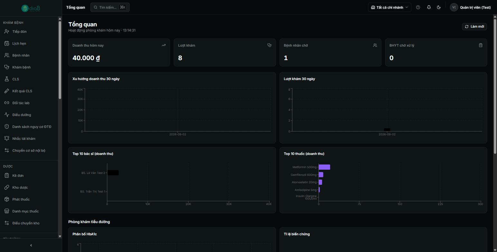
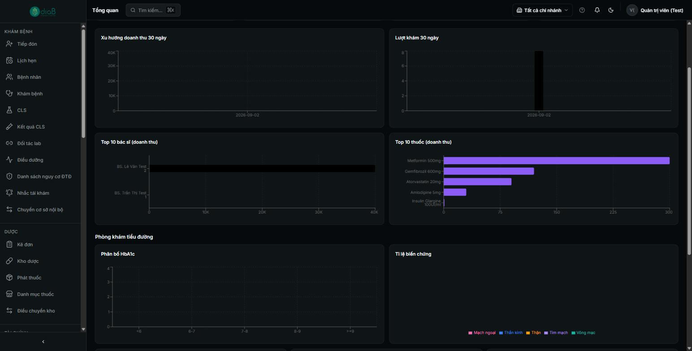
Vào menu Báo cáo. Bên trái là danh sách báo cáo chia nhóm: Tài chính, Khám bệnh/Sổ, Thống kê, BHYT, Kho dược (chuyển nhanh bằng các thẻ Tài chính / Lâm sàng / Kho dược). Chọn một báo cáo, đặt khoảng thời gian và bộ lọc, rồi bấm Lấy dữ liệu. Mỗi báo cáo có nút In Phiếu và Xuất Excel.
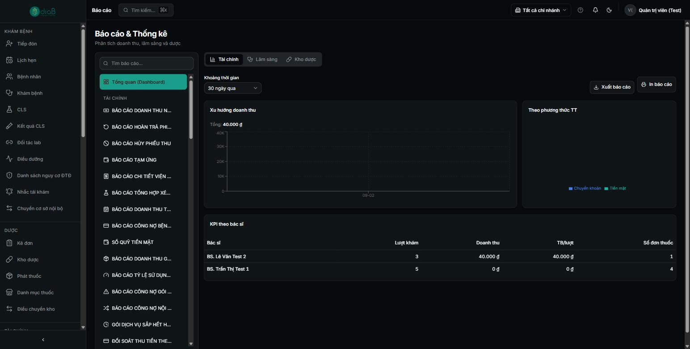
Báo cáo tiêu biểu: Doanh thu ngày/tháng, Công nợ bệnh nhân, KPI theo bác sĩ, Top thuốc kê nhiều, Thống kê ICD-10, Tồn kho, Thuốc cận date, Đối soát BHYT… và các báo cáo lâm sàng chuyên biệt cho đái tháo đường.
Chọn báo cáo “Danh sách bệnh nhân cần tái khám”. Đặt khoảng thời gian, trạng thái, bấm Lấy dữ liệu. Kết quả gồm các thẻ tổng hợp (Tổng số, Quá hạn) và danh sách bệnh nhân đến hạn/quá hạn tái khám — dùng để gọi/nhắc bệnh nhân.
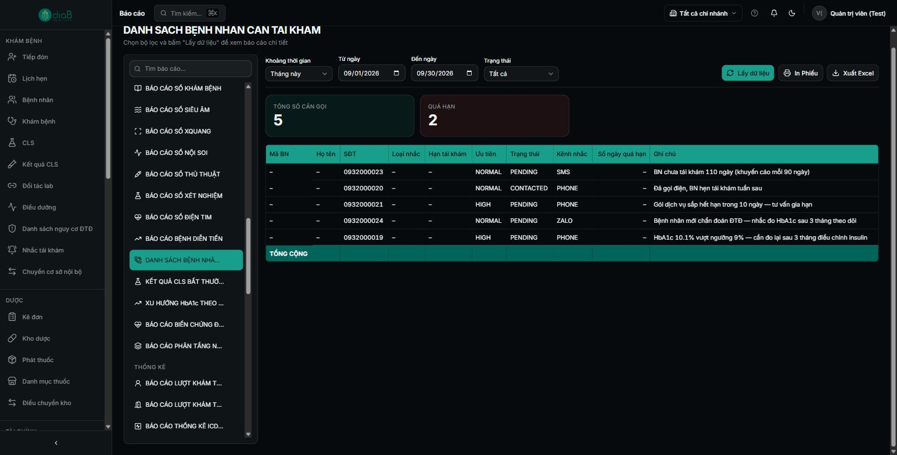
💡 Ngoài báo cáo, còn có màn hình thao tác Nhắc tái khám (menu riêng) để lập và gửi nhắc lịch qua kênh SMS/Zalo.
Chọn báo cáo “Xu hướng HbA1c theo tháng” (nhóm lâm sàng). Đặt khoảng thời gian rồi Lấy dữ liệu. Báo cáo hiển thị các thẻ chỉ số (VD số lượt đo HbA1c, trung bình toàn phòng khám) và biểu đồ xu hướng — phục vụ theo dõi kiểm soát đường huyết của nhóm bệnh nhân đái tháo đường.
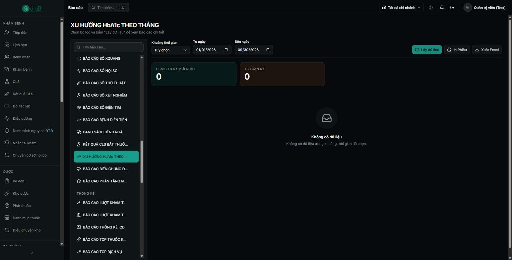
Chọn báo cáo “Gói dịch vụ sắp hết hạn” (nhóm tài chính). Báo cáo liệt kê các gói dịch vụ trả trước của bệnh nhân sắp đến hạn — giúp phòng khám chủ động nhắc gia hạn hoặc sử dụng hết định mức.
Cách dùng: Thao tác giống các báo cáo khác — chọn báo cáo trong danh sách, đặt khoảng thời gian, bấm Lấy dữ liệu, rồi Xuất Excel/In Phiếu. Các báo cáo liên quan: “Báo cáo tỷ lệ sử dụng định mức gói”, “Công nợ gói dịch vụ tồn đọng”, “Doanh thu gói dịch vụ”.
Vào menu Quản trị (địa chỉ /admin). Trang là một bảng thẻ dẫn tới từng khu vực quản lý: Phòng khám, Chi nhánh, Người dùng, Vai trò, Nhật ký, Mẫu bệnh án, ĐTQG, Nhà cung cấp, HĐĐT, API Partners, Cấu hình thông báo, Kênh nhắc lịch (SMS/Zalo), Nhập hồ sơ cũ (OCR), Danh mục mã, Cấu hình hệ thống.
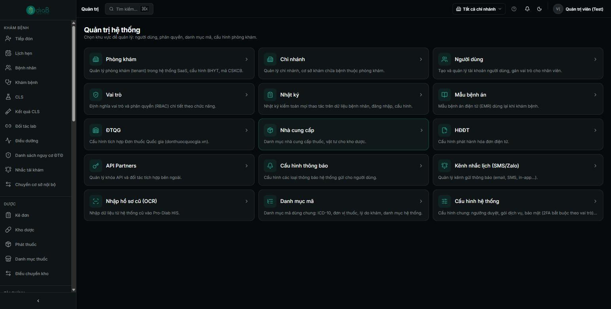
Thẻ Danh mục mã quản lý các nhóm mã dùng chung: Giới tính, Nhóm máu, Quốc tịch, Tình trạng hôn nhân, Đối tượng bệnh nhân, Loại khám, Dạng bào chế, Nhóm dịch vụ, Thuế VAT, Trạng thái đơn thuốc/thuốc… Chọn một nhóm mã để xem/thêm/sửa/ẩn các mã bên trong. Thay đổi chỉ áp dụng cho phòng khám của bạn, không ảnh hưởng phòng khám khác.
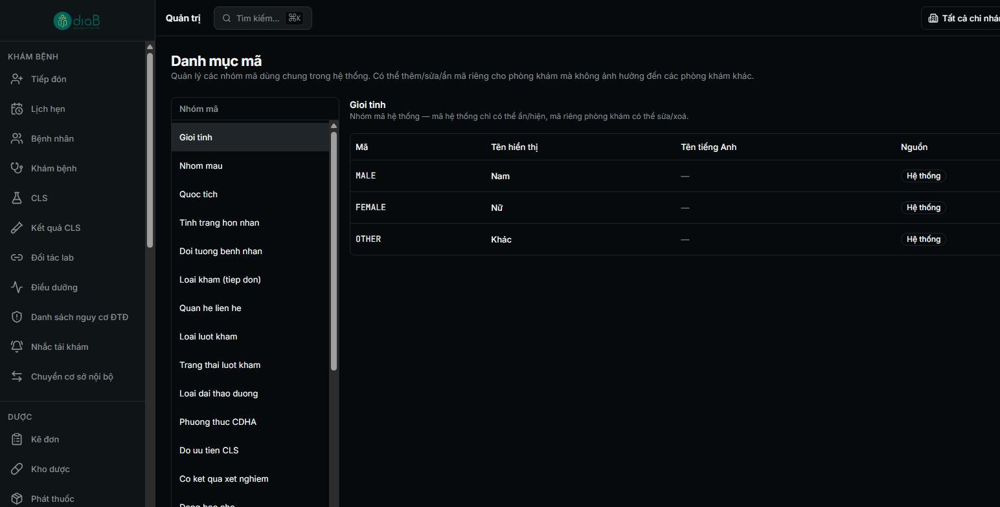
Thẻ Cấu hình hệ thống chứa các tham số nghiệp vụ tuỳ chỉnh cho phòng khám, chia theo nhóm (Bảo mật, Gói dịch vụ…). Mỗi tham số có mô tả, ô nhập giá trị và nút Lưu riêng. Ví dụ: Vai trò bắt buộc xác thực 2 lớp (2FA), Tỷ lệ cọc tối thiểu gói (%).
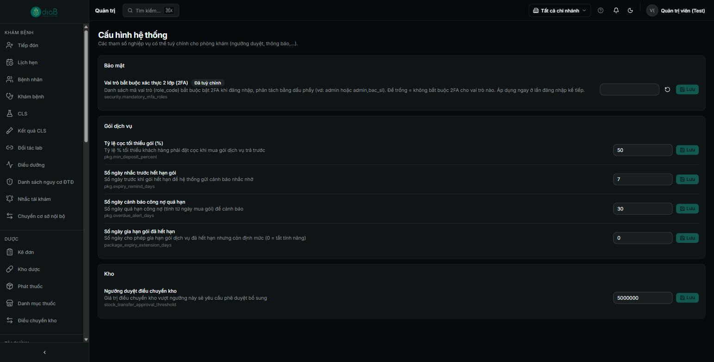
Thẻ Vai trò hiển thị bảng vai trò: Mã vai trò, Tên vai trò, Loại, Số quyền, Mô tả (VD: bac_si – Bác sĩ – 67 quyền; le_tan – Lễ tân – 32 quyền; admin – Quản trị viên – toàn quyền). Bấm một vai trò để mở ma trận quyền, bật/tắt từng quyền theo nhóm chức năng. Dùng + Tạo vai trò mới để định nghĩa vai trò tuỳ chỉnh.
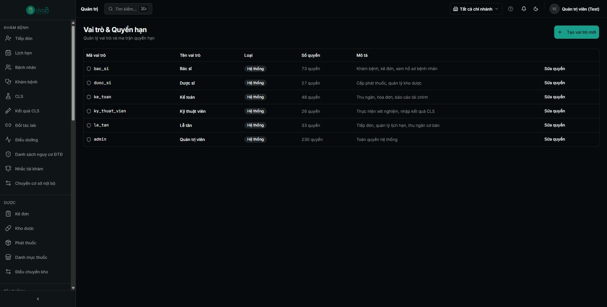
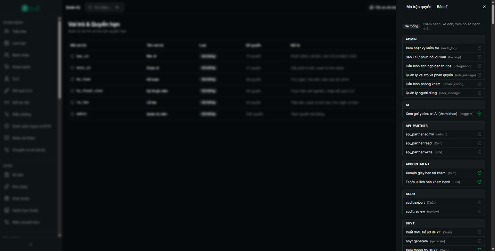
Thẻ Người dùng quản lý tài khoản nhân viên: bảng Người dùng, Điện thoại, Vai trò, Trạng thái; tìm theo tên/email và lọc theo vai trò. Dùng + Mời người dùng để tạo tài khoản mới và gán vai trò.
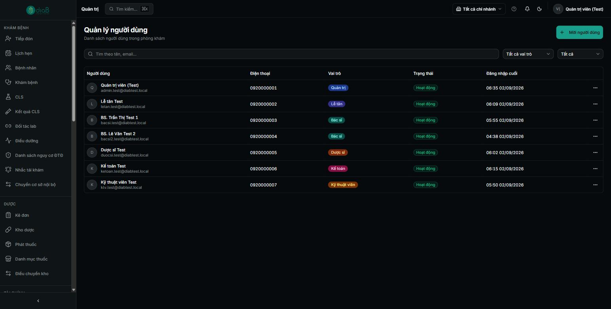
⚠️ Lưu ý bảo mật: Chỉ cấp vai trò tối thiểu đủ dùng cho từng nhân viên. Bật 2FA cho các vai trò nhạy cảm (VD admin) trong Cấu hình hệ thống. Mọi thao tác trên dữ liệu bệnh nhân được ghi tại Nhật ký (audit log).